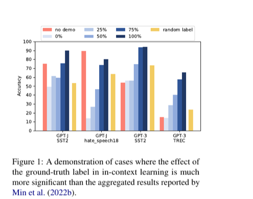

Ground-Truth Labels Matter: A Deeper Look into Input-Label Demonstrations
EMNLP 2022
Kang Min Yoo, Junyeob Kim, Hyuhng Joon Kim, Hyunsoo Cho, Hwiyeol Jo, Sang-Woo Lee, Sang-goo Lee, Taeuk Kim
한줄 요약
두 가지 새로운 지표 -- Label-Correctness Sensitivity와 Ground-truth Label Effect Ratio (GLER) -- 를 통해, 시연에서의 올바른 입력-레이블 매핑이 인컨텍스트 학습에 이전 보고보다 훨씬 큰 영향을 미치며, 그 효과가 프롬프트 상세도와 모델 규모에 의해 조절됨을 밝혀, Min et al. (2022)의 "정답 레이블은 거의 중요하지 않다"는 영향력 있는 주장을 뒤집습니다.

Figure 1. 실험 프레임워크 개요: ICL 시연에서 레이블 정확성을 체계적으로 변화시키고, 제안된 Label-Correctness Sensitivity 및 GLER 지표를 통해 다양한 모델, 태스크, 프롬프트 템플릿 설정에서의 하류 성능을 측정합니다.
배경 및 동기
인컨텍스트 학습(ICL)은 대규모 언어 모델이 파라미터 업데이트 없이 소수의 입력-레이블 시연만으로 태스크를 수행할 수 있게 하는 능력입니다. Min et al. (2022, "Rethinking the Role of Demonstrations")의 영향력 있는 연구에서는 시연의 레이블 정확성이 거의 중요하지 않다는 놀라운 결과를 보고했으며, 무작위 레이블로도 거의 동등한 성능을 보인다고 주장했습니다. 이 직관에 반하는 결과는 ICL이 시연으로부터 실제로 무엇을 학습하는지에 대한 근본적인 의문을 제기했으며, ICL 문헌에서 가장 널리 인용되는 발견 중 하나가 되었습니다.
본 논문이 다루는 핵심 문제:
직관에 반하는 기존 발견: Min et al. (2022)은 ICL 시연에서 정답 레이블을 무작위 레이블로 교체해도 하류 성능에 미미한 영향만 있다고 보고하며, 시연이 주로 포맷팅 템플릿의 역할만 한다고 시사했습니다.
제한된 실험 범위: 기존 결론은 주로 GPT-3 Davinci (175B)를 중심으로 한 좁은 범위의 모델, 소수의 태스크, 특정 상세형 프롬프트 템플릿에서 도출되어 일반화 가능성에 의문이 있습니다.
정량적 도구의 부재: 레이블 정확성이 ICL에 미치는 영향을 정밀하게 측정하고 분해할 공식적인 지표가 존재하지 않아, 설정 간 엄밀한 비교가 어려웠습니다.
실용적 중요성: 만약 레이블이 정말로 중요하지 않다면, 실제 ICL 응용에서 저렴하고 노이즈가 있는 레이블로도 시연 세트를 구성할 수 있어, 실무 방식이 근본적으로 달라져야 합니다.
분해(decomposition)의 공백: ICL 성능 향상은 입력 분포, 레이블 공간, 시연 포맷, 입력-레이블 매핑 등 여러 요인에서 비롯되지만, 각 구성 요소의 기여를 깔끔하게 분리하여 정량화한 선행 연구가 없었습니다.
이 직관에 반하는 관찰에 흥미를 느낀 저자들은 GPT-3 패밀리(Ada 350M, Babbage 1.3B, Curie 6.7B, Davinci 175B)와 다양한 분류 벤치마크(SST-2, SST-5, MR, CR, AGNews, TREC, DBPedia, RTE, CB 등)를 사용한 광범위한 재검토를 수행합니다. 새로운 정량적 지표를 도입하여, 정답 레이블이 실제로 중요하며, 기존 결론이 특정한 제한된 실험 설정의 산물이었음을 밝힙니다.
제안 방법: 정답 레이블의 영향 정량화
본 논문은 두 가지 새로운 지표를 도입하고, 체계적인 다요인 분석을 통해 정답 레이블이 ICL 성능에 기여하는 정도를 정량화합니다. 핵심 아이디어는 전체 ICL 향상을 포맷, 레이블 공간, 입력 분포, 정답 레이블 매핑이라는 개별 구성 요소로 분해하여 각각의 상대적 기여도를 측정하는 것입니다.
1
ICL 성능 분해
저자들은 인컨텍스트 시연으로 인한 전체 성능 향상을 네 가지 가산적(additive) 구성 요소로 분해합니다: (a) 포맷 효과 -- 입력-레이블 구조를 보는 것에서 오는 향상; (b) 레이블 공간 효과 -- 가능한 레이블 집합에 노출되는 것에서 오는 향상; (c) 입력 분포 효과 -- 태스크 관련 입력을 보는 것에서 오는 향상; (d) 정답 레이블 효과 -- 올바른 입력-레이블 매핑에서 오는 추가 향상. 이 분해를 통해 각 요인의 기여를 정밀하게 분리할 수 있습니다.
2
Label-Correctness Sensitivity
모델의 ICL 성능이 시연 레이블의 정확성에 얼마나 민감한지를 측정하는 지표입니다. 정답 레이블을 다양한 비율(0%, 25%, 50%, 75%, 100% 무작위)로 체계적으로 교체하면서, 모델이 올바른 입력-레이블 매핑에 의존하는 정도를 포착합니다. 레이블 노이즈 증가에 따른 급격한 성능 하락은 높은 민감도를 나타내며, 모델이 올바른 시연으로부터 진정으로 학습하고 있음을 의미합니다.
3
Ground-truth Label Effect Ratio (GLER)
전체 ICL 성능 향상에 대한 정답 레이블의 상대적 기여도를 정량화하는 보완적 지표입니다. GLER은 정답 레이블 효과와 전체 ICL 향상(정답 레이블 성능 - 제로샷 성능)의 비율로 정의됩니다. GLER 0은 레이블이 포맷/분포 효과 이상의 기여가 없음을, GLER 1은 모든 ICL 향상이 올바른 레이블 매핑에서 비롯됨을 의미합니다. 이를 통해 모델, 태스크, 프롬프트 설계 간의 직접적이고 정규화된 비교가 가능해집니다.
4
다요인 실험 분석
이 지표들을 활용하여 다양한 차원에 걸친 실험을 수행합니다: (a) GPT-3 패밀리의 4가지 모델 규모(350M~175B 파라미터), (b) 이진, 3-클래스, 다중 클래스 설정을 포괄하는 12개 이상의 분류 태스크(SST-2, SST-5, MR, CR, AGNews, TREC, DBPedia, RTE, CB 등), (c) 최소형(입력-레이블 쌍만)부터 상세형(전체 태스크 설명 및 지시 포함)까지 3가지 프롬프트 템플릿 설계, (d) 다양한 시연 수(4~32샷). 이러한 체계적 범위를 통해 정답 레이블이 중요해지는 조건을 밝힙니다.
5
핵심 조절 요인 식별
소거 연구와 통제 실험을 통해 정답 레이블의 중요도를 조절하는 두 가지 핵심 요인을 식별합니다: 프롬프트 템플릿 상세도(태스크 설명을 포함한 상세한 템플릿은 레이블 의미를 템플릿 자체에 인코딩하여 시연 레이블에 대한 의존도를 줄임)와 모델 규모(Davinci 175B와 같은 대형 모델은 올바른 시연을 효과적으로 활용하는 반면, Ada 350M과 같은 소형 모델은 약한 민감도를 보임). 이 요인들은 상세한 프롬프트를 단일 대형 모델에 사용한 기존 연구가 왜 다른 결론에 도달했는지를 설명합니다.
실험 결과
저자들은 GPT-3 패밀리(Ada 350M, Babbage 1.3B, Curie 6.7B, Davinci 175B)와 감성 분석, 주제 분류, 질문 분류, 자연어 추론을 포괄하는 포괄적인 텍스트 분류 벤치마크에 걸쳐 평가를 수행합니다. 제안된 두 지표는 기존 연구에서 가려져 있던 명확한 패턴을 드러냅니다.
모델 및 벤치마크
모델
파라미터
평가 태스크
GPT-3 Ada
350M
SST-2, SST-5, MR, CR, AGNews, TREC, DBPedia, RTE, CB 등 (이진~14-클래스 분류를 포괄하는 12개 이상의 태스크)
GPT-3 Babbage
1.3B
GPT-3 Curie
6.7B
GPT-3 Davinci
175B
핵심 발견: Label-Correctness Sensitivity
요인
낮은 민감도 (레이블이 중요하지 않아 보임)
높은 민감도 (레이블이 확실히 중요함)
프롬프트 상세도
태스크 설명이 포함된 상세한 템플릿
태스크 지시 없는 최소형 템플릿
모델 규모
소형 모델 (Ada 350M, Babbage 1.3B)
대형 모델 (Curie 6.7B, Davinci 175B)
태스크 복잡도
단순 이진 분류 (예: SST-2, MR)
세분화된 다중 클래스 분류 (예: AGNews, TREC, DBPedia)
시연 수
매우 적은 시연 (4-shot)
더 많은 시연 (16-32 shot)
Ground-truth Label Effect Ratio (GLER) 분석
실험 설정
GLER 경향
해석
최소형 프롬프트 + Davinci 175B
높은 GLER
정답 레이블이 ICL 성능에 실질적으로 기여; 모델이 올바른 매핑으로부터 적극적으로 학습
상세형 프롬프트 + Ada 350M
낮은 GLER
다른 요인(포맷팅, 템플릿의 태스크 설명)이 지배적; 레이블이 템플릿이 제공하는 것 이상의 기여가 미미
다중 클래스 태스크 (AGNews, TREC)
이진 태스크보다 높은 GLER
레이블 선택지가 많을수록 올바른 매핑에 대한 의존도 증가 -- 포맷만으로 레이블 공간을 유추하기 어려움
시연 수 증가
GLER 증가 경향
더 많은 예시가 올바른 레이블의 학습 신호를 증폭하여 정확한 시연의 이점이 누적됨
Min et al. (2022) 설정
낮은 GLER
Min et al.이 사용한 상세형 프롬프트의 특정 조합이 정답 레이블 효과를 인위적으로 억제
성능 분해: ICL 향상의 동인은 무엇인가?
구성 요소
최소형 프롬프트
상세형 프롬프트
포맷 효과
작은 기여
보통 기여
레이블 공간 효과
보통 기여
큰 기여 (템플릿이 레이블 의미를 인코딩)
입력 분포 효과
보통 기여
보통 기여
정답 레이블 효과
큰 기여 (지배적 요인)
작은 기여 (템플릿에 의해 가려짐)
정답 레이블은 확실히 중요합니다: 광범위한 설정에 걸쳐, 올바른 입력-레이블 매핑은 무작위 레이블 대비 상당한 성능 향상을 가져옵니다. 최소형 프롬프트에서의 다중 클래스 태스크의 경우, 정답과 무작위 레이블 간의 성능 격차가 10~20 절대 포인트를 초과할 수 있습니다.
프롬프트 상세도가 핵심 교란 요인: 태스크 설명을 포함한 상세한 프롬프트 템플릿은 레이블 정보를 템플릿 자체에 효과적으로 인코딩하여, 시연 레이블에 대한 모델의 의존도를 줄입니다. 이것이 상세한 템플릿을 사용한 Min et al. (2022)이 레이블이 중요하지 않다는 결론에 도달한 이유입니다 -- 템플릿이 이미 모델에게 각 레이블의 의미를 "알려주고" 있었습니다.
큰 모델일수록 레이블을 더 효과적으로 활용: 모델 규모가 Ada (350M)에서 Davinci (175B)로 증가할수록, 모델은 레이블 정확성에 유의미하게 더 민감해지며, 올바른 입력-레이블 매핑에서 더 강한 학습 신호를 추출합니다. 소형 모델은 올바른 시연의 정보를 완전히 활용할 능력이 부족합니다.
태스크 세분도가 효과를 증폭: 많은 클래스를 가진 세분화된 분류 태스크(예: TREC 6클래스, AGNews 4클래스, DBPedia 14클래스)에서는 정답과 무작위 레이블 간의 성능 격차가 상당히 커지며, 이는 포맷만으로는 레이블 공간을 유추하기 어려워지기 때문입니다.
노이즈에 비례한 성능 하락: 잘못된 레이블의 비율을 체계적으로 증가(0%~100% 무작위)시키면 대략 비례적으로 성능이 하락하여, 각 올바른 시연이 의미 있고 가산적인 학습 신호를 제공함을 확인합니다.
기존 결론은 설정에 종속적: "레이블이 중요하지 않다"는 발견은 상세한 프롬프트와 소형 모델의 특정 조합에서만 성립하며, 더 넓은 ICL 환경으로 일반화되지 않습니다. 실험 범위를 확장하면 정답 레이블의 중요성이 명백해집니다.
GLER이 숨겨진 구조를 드러냄: GLER을 통한 분해 분석은 Min et al. (2022)이 연구한 설정에서 정답 레이블 효과가 진정으로 작았음을 보여줍니다 -- 그러나 이는 레이블이 본질적으로 중요하지 않기 때문이 아니라, 상세한 프롬프트 템플릿이 태스크 설명을 통해 이미 동등한 정보를 제공하고 있었기 때문입니다.
의의
본 연구는 인컨텍스트 학습의 이해와 실전에 네 가지 중요한 기여를 합니다:
영향력 있는 오해를 바로잡음: 정답 레이블이 ICL에 중요하지 않다는 주장은 NLP 커뮤니티 전반에서 널리 받아들여지고 인용되었습니다. 본 논문은 올바른 시연이 실제로 모델에 의미 있는 입력-레이블 매핑을 가르친다는 엄밀한 증거를 제시하여, ICL의 작동 원리에 대한 핵심적 직관을 복원하고 커뮤니티의 가정을 재평가하도록 촉구합니다.
원칙적 평가 지표 도입: Label-Correctness Sensitivity와 GLER은 시연 품질이 ICL에 미치는 영향을 측정하고 분해하기 위한 최초의 공식적이고 정량적인 도구로, 향후 연구에서의 표준화된 비교를 가능하게 하며 후속 ICL 분석 연구에서 채택되었습니다.
실무자를 위한 실용적 지침 제공: 프롬프트 상세도와 모델 규모를 핵심 조절 요인으로 식별함으로써, 실무자들에게 명확한 설계 가이드라인을 제공합니다: 큰 모델을 최소형 프롬프트와 함께 사용할 때, 시연의 레이블 정확성을 우선시하는 것이 강력한 ICL 성능을 위해 특히 중요합니다. 반대로, 레이블 노이즈가 불가피한 경우에는 더 상세한 템플릿을 사용하여 보상할 수 있습니다.
ICL의 메커니즘적 이해 발전: ICL 성능을 포맷, 레이블 공간, 입력 분포, 정답 레이블 구성 요소로 분해함으로써, 모델이 시연으로부터 무엇을 학습하는지 이해하기 위한 원칙적 프레임워크를 제공하며, 대규모 언어 모델에서의 인컨텍스트 학습 메커니즘을 해명하려는 더 넓은 연구 노력에 기여합니다.